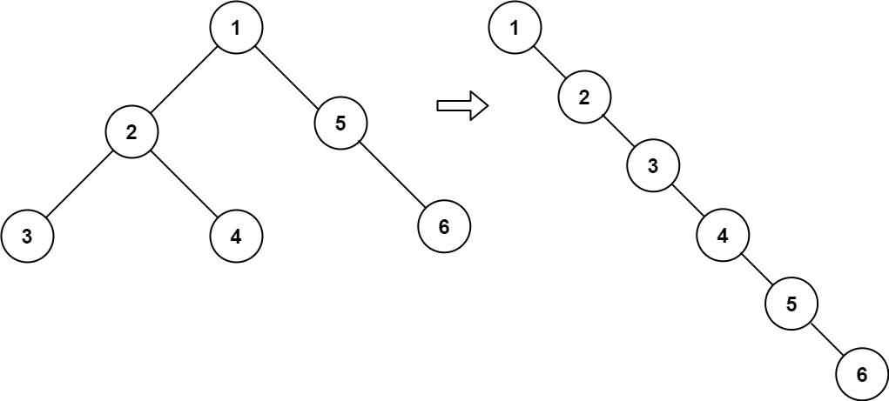

114. 二叉树展开为链表
题目与约束
给你二叉树的根结点 root ，请你将它展开为一个单链表：
- 展开后的单链表应该同样使用
TreeNode，其中right子指针指向链表中下一个结点，而左子指针始终为null。 - 展开后的单链表应该与二叉树 先序遍历 顺序相同。
示例 1：

输入：root = [1,2,5,3,4,null,6]
输出：[1,null,2,null,3,null,4,null,5,null,6]
示例 2：
输入：root = []
输出：[]
示例 3：
输入：root = [0]
输出：[0]
提示：
- 树中结点数在范围
[0, 2000]内 -100 <= Node.val <= 100
进阶：你可以使用原地算法（O(1) 额外空间）展开这棵树吗？
核心不变量
按右—左—根处理，prev 始终是当前节点应接的后继。
完整推导
思路推导
-
直觉与痛点（边遍历边修改的惨剧）：
前序遍历的顺序是“根 -> 左 -> 右”。假如你在遍历到“根”的时候，直接把“左孩子”移到“右孩子”的位置上，那原来的“右孩子”就彻底丢失了！ 除非你用额外的空间把它存起来。
-
破局思路（子树嫁接法 / O(1) 空间解法）：
不要盯着一个个节点看，我们要在宏观上移动整棵子树！
既然前序遍历是“根 -> 左子树 -> 右子树”，这意味着右子树的所有节点，都排在左子树的最末尾之后。
所以，破局的关键动作只有三步：
- 找到接盘侠：找到左子树里，前序遍历的最后一个节点（其实就是左子树的“最右下角”的那个节点）。
- 嫁接右子树：把当前节点原本的整棵右子树，直接“咔嚓”剪下来，原封不动地接在那个“接盘侠”的右边。
- 左树变右树：把当前节点的整个左子树移到右边去，然后把左指针置空。
-
逻辑推演（一路向右，优化思路）：
当完成上面三步后，当前节点原本的左孩子变成了右孩子，右孩子排在了左子树的最后面。
接着，我们只需要让指针往右走一步（
root = root.right），继续重复这个“找接盘侠 -> 嫁接 -> 左变右”的操作，直到把所有的左子树都掏空，整棵树自然就变成了一根直挺挺的链表！Java 实现（原地嫁接版）
/**
* Definition for a binary tree node.
* public class TreeNode {
* int val;
* TreeNode left;
* TreeNode right;
* TreeNode() {}
* TreeNode(int val) { this.val = val; }
* TreeNode(int val, TreeNode left, TreeNode right) {
* this.val = val;
* this.left = left;
* this.right = right;
* }
* }
*/
class Solution {
public void flatten(TreeNode root) {
TreeNode curr = root;
while (curr != null) {
// 如果左子树不为空，我们才需要进行“嫁接”操作
if (curr.left != null) {
// 1. 寻找“接盘侠”：左子树的最右侧节点
TreeNode predecessor = curr.left;
while (predecessor.right != null) {
predecessor = predecessor.right;
}
// 2. 嫁接：把原右子树接到接盘侠的右边
predecessor.right = curr.right;
// 3. 移花接木：把左子树整体移到右边
curr.right = curr.left;
// 千万别忘了把左指针置空！
curr.left = null;
}
// 当前节点处理完毕，向右下方推进，处理下一个节点
curr = curr.right;
}
}
}
复杂度
- 时间复杂度：O(N)。虽然里面有个找前驱节点的
while循环，但如果画图分析，你会发现整棵树的每条边最多只会被遍历两次，整体时间复杂度依然是极其高效的线性时间。 - 空间复杂度：O(1)。我们仅仅用了几个指针变量，完全没有使用递归调用栈，也没有开辟任何新数组！真正的原地（In-place）变换。
-
面试追问：“如果不限制空间复杂度，你能用极其简短的【递归】写出来吗？”
-
满分抢答：可以，这就是极其惊艳的“反前序遍历法（逆向后序遍历）”。
-
思路简述：前序遍历是“中 -> 左 -> 右”。如果我们反过来，按“右 -> 左 -> 中”的顺序遍历，也就是先走到树的最右下角。
用一个全局变量
pre记录上一个访问的节点。当我们处理当前节点curr时，只需要做三件事：curr.right = pre;curr.left = null;pre = curr;相当于从尾巴开始，把节点一个个穿成一串！
-
神仙级代码展示：
private TreeNode pre = null;
public void flatten(TreeNode root) {
if (root == null) return;
flatten(root.right); // 先走右边
flatten(root.left); // 再走左边
root.right = pre; // 把右边连上后面已经排好的队伍
root.left = null; // 左边斩断
pre = root; // 自己成为新的排头兵
}
*(注：这种解法的空间复杂度为 <span class="plain-math" aria-label="O(H)">O(H)</span>，在工程中如果树很深可能会爆栈，但其思维之跳跃和代码之优雅，绝对能震撼面试官。)*
这种把整棵子树“剪切 + 粘贴”的 O(1) 算法，就像一台精密的外科手术。
力扣原题
其他语言实现
C++ 实现
实现来源：经典解法实现
- 展开后按前序遍历串成单链（left 置空、right 当 next）
- 对每个节点：若有左子树，找到左子树的最右节点，把右子树接到它后面
- 左子树整体移到右边，继续处理下一个
class Solution {
public:
void flatten(TreeNode* root) {
TreeNode* cur = root;
while (cur) {
if (cur->left) {
TreeNode* pred = cur->left; // 左子树最右节点
while (pred->right) pred = pred->right;
pred->right = cur->right; // 右子树接到其后
cur->right = cur->left; // 左子树移到右边
cur->left = nullptr;
}
cur = cur->right;
}
}
};
Python 实现
实现来源：经典解法实现
- 展开后按前序遍历串成单链（left 置空、right 当 next）
- 对每个节点：若有左子树，找到左子树的最右节点，把右子树接到它后面
- 左子树整体移到右边，继续处理下一个
class Solution:
def flatten(self, root: TreeNode) -> None:
cur = root
while cur:
if cur.left:
pred = cur.left # 左子树最右节点
while pred.right:
pred = pred.right
pred.right = cur.right # 右子树接到其后
cur.right = cur.left # 左子树移到右边
cur.left = None
cur = cur.right
Go 实现
实现来源：经典解法实现
- 展开后按前序遍历串成单链（left 置空、right 当 next）
- 对每个节点：若有左子树，找到左子树的最右节点，把右子树接到它后面
- 左子树整体移到右边，继续处理下一个
func flatten(root *TreeNode) {
cur := root
for cur != nil {
if cur.Left != nil {
pred := cur.Left // 左子树最右节点
for pred.Right != nil { pred = pred.Right }
pred.Right = cur.Right
cur.Right = cur.Left
cur.Left = nil
}
cur = cur.Right
}
}
C 实现
实现来源：经典解法实现
- 展开后按前序遍历串成单链（left 置空、right 当 next）
- 对每个节点：若有左子树，找到左子树的最右节点，把右子树接到它后面
- 左子树整体移到右边，继续处理下一个
void flatten(struct TreeNode* root) {
struct TreeNode* cur = root;
while (cur) {
if (cur->left) {
struct TreeNode* pred = cur->left;
while (pred->right) pred = pred->right;
pred->right = cur->right;
cur->right = cur->left;
cur->left = NULL;
}
cur = cur->right;
}
}